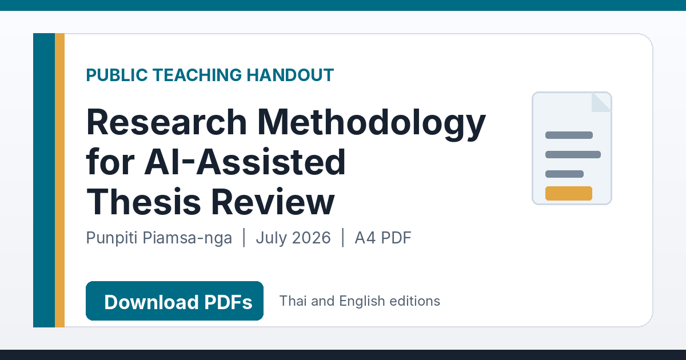

Research Methodology for AI-Assisted Thesis Review
{kind=link}

เอกสารประกอบการเรียน Research Methodology for AI-Assisted Thesis Review เผยแพร่แล้วทั้งภาษาไทยและภาษาอังกฤษ สำหรับใช้ในชั้นเรียน การปรึกษาวิทยานิพนธ์ และการทบทวนงานด้วยตนเอง
เป้าหมายไม่ใช่สอนให้ AI ตัดสินว่างานวิจัยดีหรือไม่ แต่ช่วยให้ผู้เรียนรู้ว่าควรถามอะไร ต้องหาหลักฐานตรงไหน และต้องตรวจความสอดคล้องระหว่างส่วนต่าง ๆ ของงานอย่างไร ก่อนยอมรับข้อเสนอจาก AI
แกนหลักคือ Problem → Evidence → Decision → Claim
เอกสารชวนให้มองวิทยานิพนธ์เป็นสายโซ่ของเหตุผล ตั้งแต่ปัญหาวิจัย คำถามและสมมติฐาน วิธีวิจัย ข้อมูลและการวัด การวิเคราะห์ ไปจนถึงข้อสรุป ทุกส่วนต้องรองรับส่วนถัดไป และข้อกล่าวอ้างสุดท้ายต้องไม่เกินขอบเขตของหลักฐาน
การเขียนที่ลื่นไหลไม่สามารถซ่อมงานที่ตั้งปัญหาไม่ชัด วิธีตอบคำถามไม่ได้ หรือสรุปเกินผลที่วัดจริงได้ จึงควรตรวจ research logic ก่อนแก้ภาษาและรูปแบบ
ห้าคำถามกดดันงานวิจัยก่อนลงรายละเอียด
ส่วนต้นของเอกสารเสนอ five sharp thesis-review tests เพื่อค้นหาปัญหาระดับโครงสร้าง เช่น ปัญหาวิจัยมีอยู่จริงและยังไม่ถูกแก้หรือไม่ งานถูกออกแบบให้สามารถ “ล้มเหลว” ได้หรือไม่ เกณฑ์บังคับถูกแยกจากตัวชี้วัดเพื่อ optimization หรือไม่ คุณภาพการวัดรองรับความแรงของข้อสรุปเพียงใด และข้ออ้างสามารถย้อนกลับไปยังหลักฐานได้หรือไม่
คำถามเหล่านี้ช่วยหยุดไม่ให้ผู้ตรวจหลงไปกับเทคนิคที่ซับซ้อน ทั้งที่ฐานของงานยังไม่มั่นคง
ครอบคลุมตั้งแต่ framing จนถึง cross-section consistency
เนื้อหา 26 หน้าครอบคลุม research framing, literature และกรอบแนวคิด, ขอบเขตและการออกแบบวิจัย, ตัวแปรและการวัด, validity และ reliability, controls และ baselines, ethics และ privacy, การรายงานผล ตลอดจนข้อจำกัดและ contribution
มี traceability matrix สำหรับตรวจว่าปัญหา คำถาม วิธี ผล และข้อสรุปเชื่อมกันจริงหรือไม่ พร้อมตัวอย่างง่ายเพื่อทำให้โครงสร้างเหตุผลมองเห็นได้ก่อนนำไปใช้กับงานที่ซับซ้อนกว่า
AI ช่วยตั้งประเด็น แต่ไม่สร้างความจริงที่ขาดหาย
AI สามารถช่วยอ่าน เปรียบเทียบส่วนต่าง ๆ ชี้ความไม่สอดคล้อง และสร้างคำถามสำหรับผู้วิจัยได้ แต่ไม่ควรถูกใช้เติม citation ที่ไม่มีอยู่ สร้างผลที่ไม่ได้วัด หรือรับรองความถูกต้องแทนผู้เขียน อาจารย์ที่ปรึกษา และกรรมการ
หลักคิดของเอกสารคือ AI proposes. Humans verify. ผู้ใช้ยังต้องรับผิดชอบต่อทุก claim, citation, calculation, table, figure, ethical statement และการตัดสินใจสุดท้าย
ใช้ได้สามบริบท แต่ไม่แทนข้อกำหนดของสถาบัน
เอกสารออกแบบไว้สำหรับการสอนในชั้นเรียน การสนทนาระหว่างอาจารย์ที่ปรึกษากับนิสิต และการ self-review ก่อนส่งงาน อย่างไรก็ตาม เอกสารนี้ไม่แทนวิจารณญาณของอาจารย์ที่ปรึกษา การพิจารณาของคณะกรรมการ หรือข้อกำหนดวิทยานิพนธ์ของแต่ละสถาบัน
หน้าเผยแพร่มีทั้ง PDF และ Markdown ภาษาไทย–อังกฤษ มี versioned archive สำหรับอ้างอิงฉบับที่ใช้ และมี BibTeX สำหรับผู้ที่ต้องการลงรายการอ้างอิงอย่างเป็นระบบ
PDF ภาษาไทย · 26 หน้า ดาวน์โหลดเอกสารภาษาไทย ฉบับแปลและปรับเพื่อใช้ในชั้นเรียน รูปแบบ A4 English PDF · 26 pages Download the English handout Public A4 edition, version 2026.07 หน้าหลักของเอกสาร PDF, Markdown, versioned archive และ BibTeX ตรวจรุ่นล่าสุดและเลือกไฟล์ที่ต้องการจากหน้าต้นทาง